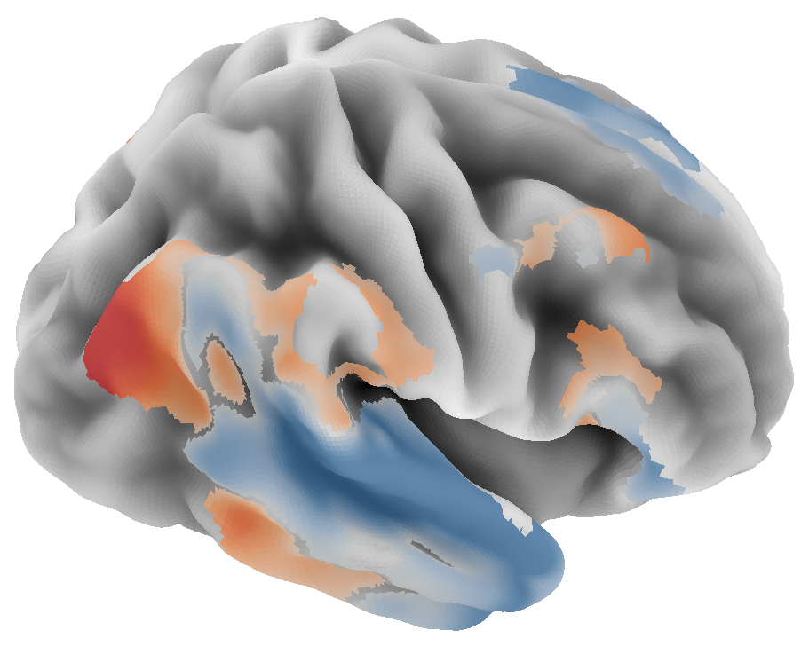

Zero-shot
Without participant data
Predict responses to new speech for a new participant and dataset, without fMRI from that participant.
Captures response structure shared across listeners.

RABBiT · Research paper
RABBiT predicts fMRI responses from audio, with zero-shot prediction for new participants and adaptation from a short calibration recording.

Zero-shot
Predict responses to new speech for a new participant and dataset, without fMRI from that participant.
Captures response structure shared across listeners.
Few-shot
Adapt predictions using a small amount of the participant’s fMRI and corresponding audio.
Approximately 10 minutes of recordings in the evaluated setting.

The largest gains occur in auditory and temporal language cortex. Performance varies by region.
Zero-shot prediction. Δr = RABBiT − TRIBEv2. Blue: RABBiT higher. Orange: TRIBEv2 higher.
Naturalistic listening; TRIBEv2’s visual input is zeroed and predictions are compared at matched cortical resolution.
Full results and evaluation details